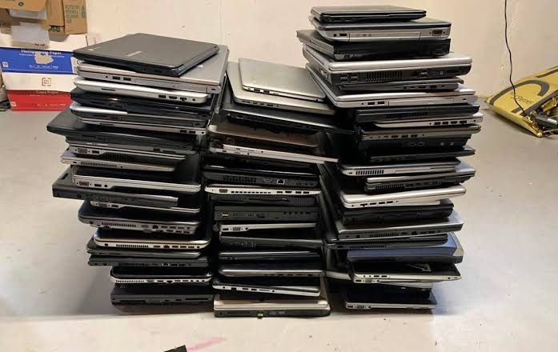

HCA HEALTHCARE / ENTERPRISE IT
Enterprise Technology Refresh
Configured and deployed 50+ laptops as part of an enterprise-wide technology refresh initiative.
Explore the project +
My contribution
Configured devices for employees and provided post-deployment troubleshooting for hardware, software, and setup issues.
Beyond deployment
Collected legacy laptops and helped coordinate equipment pickup and recycling to support proper retirement of outdated technology.